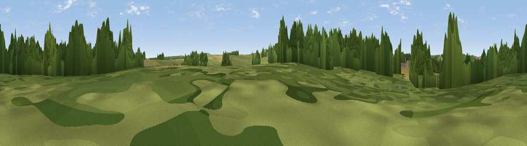

Viewpoint near Breedon on the Hill
#40919 in England · top 87% of its area beats it · near Breedon on the HillThe view, rendered

A 360° render of this exact spot computed from the terrain model, tree cover and land cover — summer colours, afternoon light, calibrated against photographs of famous viewpoints. Real trees, hedges and buildings will differ in detail.
The panorama
Grey silhouette: terrain skyline in each direction (720 bearings, Earth curvature and refraction included). Dashed green: skyline with trees (+15 m) and buildings (+8 m) as obstacles. Blue strip: how far the ground is visible on each bearing.
Where the view opens
Wedge length = distance to the farthest visible ground on that bearing (vegetation-aware). Rings at 10, 25 and 50 km.
What fills the view
44% woodland · 26% grassland · 26% cropland · 2% built-up · 2% water
Angular shares of the visible panorama (visual magnitude), not map area. Landscape diversity 0.53 (0–1 Shannon).
Key numbers
More beautiful places nearby
The staircase of upgrades: each row has a higher view potential than everything closer. Driving times are estimates from straight-line distance, calibrated against real road routing — check an actual route before setting out.
| Place | Direction | Drive | Score |
|---|---|---|---|
| Viewpoint near Wilson | NE · 2 km | ~4 min | 47.9 |
| Breedon Hill | E · 2 km | ~5 min | 57.9 |
| Viewpoint near Hartshorne | WSW · 5 km | ~11 min | 59.5 |
| Viewpoint near Whitwick | SE · 8 km | ~17 min | 63.6 |
| Viewpoint near Whitwick | SE · 9 km | ~17 min | 71.2 |
| Ives Head | ESE · 11 km | ~21 min | 73.3 |
| Viewpoint near Stanton under Bardon | SE · 12 km | ~23 min | 76.0 |
| Viewpoint near Woodhouse Eaves | SE · 15 km | ~27 min | 77.7 |
52.80305, -1.42990 · source: osm peak · position refined by local search. Computed location — check access rights before visiting.